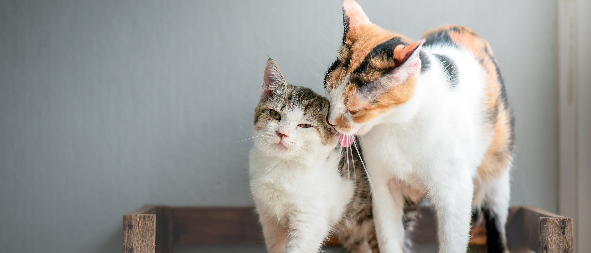
Comportamento
Estudo revela que gatos são mais felizes quando adotados com os irmãos
Adotar dois gatos que já possuem um forte vínculo pode facilitar a adaptação ao novo lar. Segundo especialistas em comportamento felino, gatos que cresceram juntos podem oferecer companhia, segurança e estímulo durante a mudança para uma nova casa.
Leia mais →Mais Lidas
1
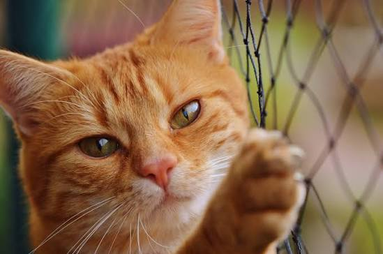
Gato brasileiro é considerado o "mais fofo do mundo"
21 de agosto de 2026
2
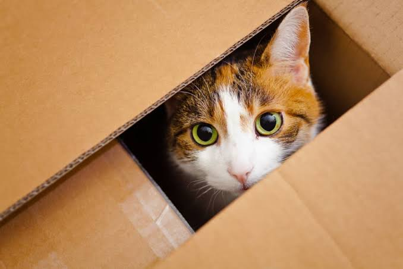
Porque gatos adoram caixas? A ciência explica!
21 de setembro de 2026
3
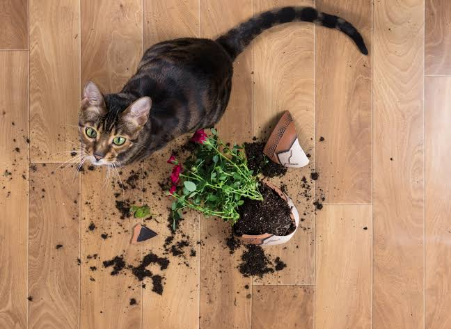
Plantas que são seguras para gatos em casa
18 de setembro de 2026
4
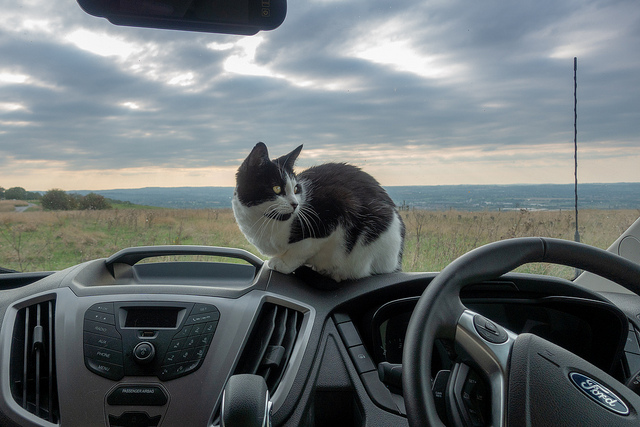
Como preparar seu gato para viagens de carro
20 de setembro de 2026
5
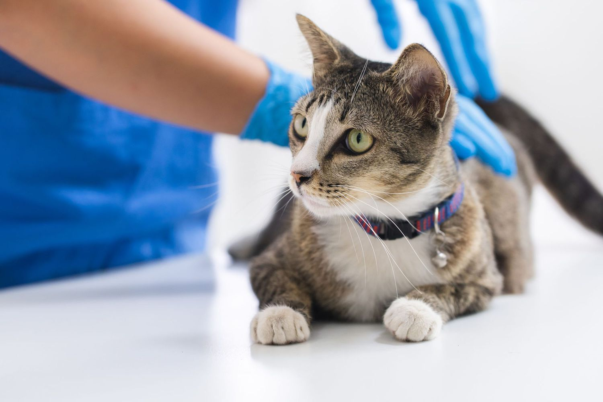
Entenda sobre as vacinações necessárias do seu felino
20 de setembro de 2026
6
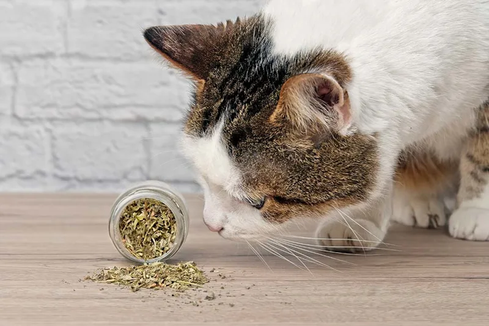
Saiba como utilizar cat nip na rotina do seu gato
17 de setembro de 2026
Últimas notícias
Ver todas →
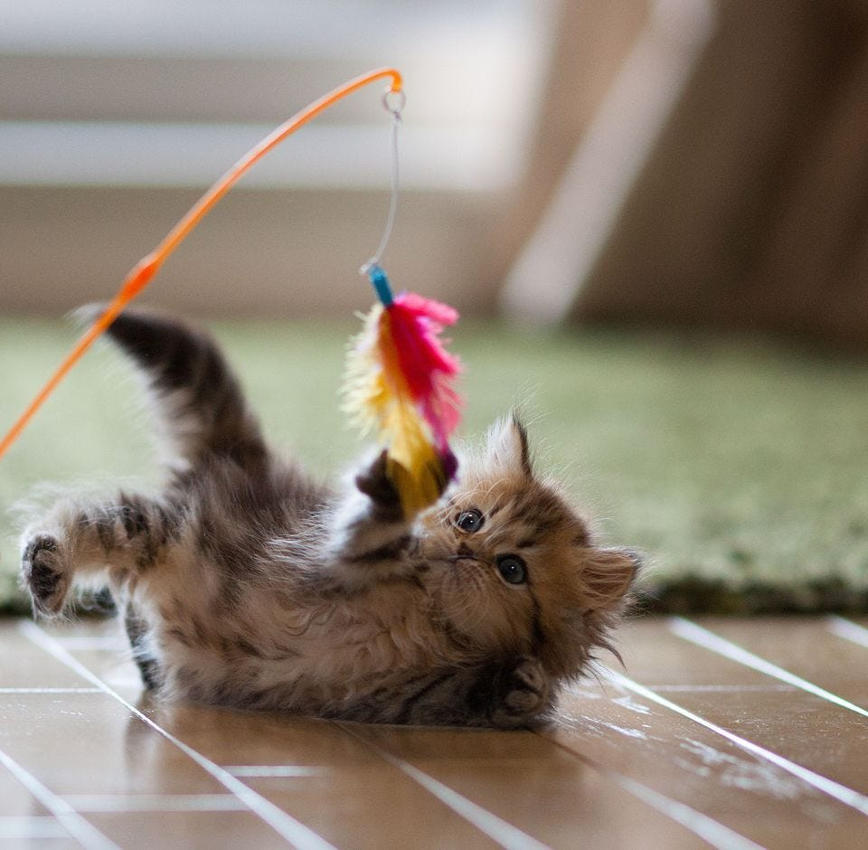
Comportamento
Brincadeiras que estimulam a saúde mental dos gatos.
Veja como atividades simples podem qualidade da saúde do seu felino.
22 de setembro
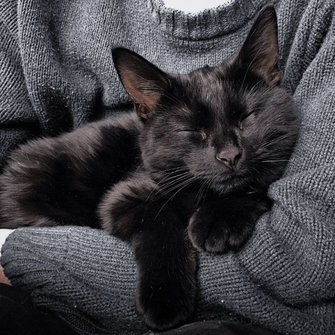
Curiosidades
Você sabe porque o seu gato ronrona? Venha descobrir!
Últimas pesquisas descobriram mais sobre o ronronar dos gatinhos.
20 de setembro
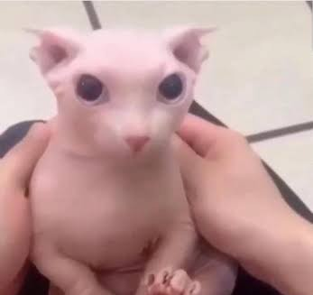
Gatos famosos
Por onde anda o querido do público: Bingus?
Após conquistar todos com seu olhar marcante e sua aparência única, Bingus continua sendo lembrado pelos fãs.
19 de setembro
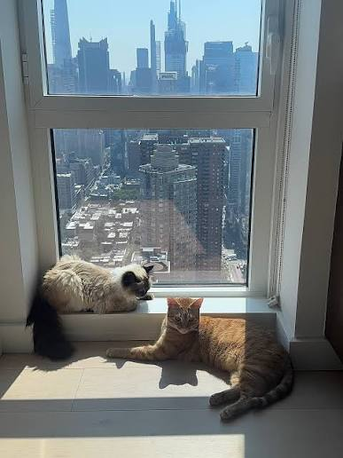
Mundo felino
Gatos são mais comuns em cidades grandes.
Um novo levantamento mostra que a presença de gatos em áreas urbanas cresceu nos últimos anos.
22 de setembro
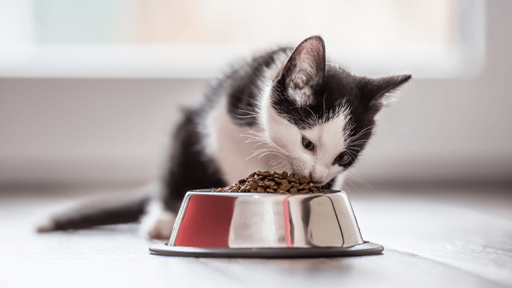
Confira os melhores alimentos para o seu gato
Descubra quais alimentos podem fazer parte de uma alimentação saudável,
equilibrada e saborosa para o seu companheiro.
Rações de qualidade, carnes e alguns alimentos naturais podem fazer
parte da rotina dos felinos, desde que sejam oferecidos de maneira
adequada.